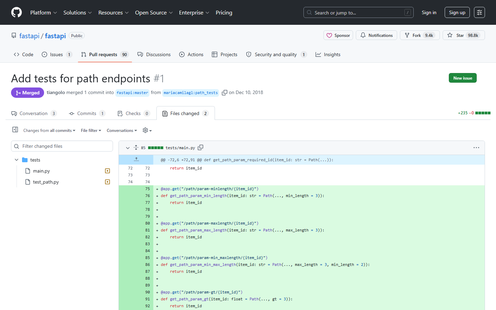

第九课：Code Review
时长：25 分钟 | 前置：第八课 | P0 词条：14 个 | 覆盖 UI 元素：18 个
学习目标
学完这节课，你能：
- 在 Files changed 标签中逐行审查代码
- 在具体代码行上添加评论
- 使用 Suggested change（建议修改）功能
- 提交 Review 时正确选择 Comment / Approve / Request changes
- 理解 Re-request review 和 Dismiss review 的流程
0. 开场（1 min）
画面：打开一个 PR 的 Files changed 标签

旁白：
"Code Review 是团队协作的质量底线。通过 Review，你可以在代码合并前发现问题、提出建议。
这节课讲两件事：1) 怎么 Review 别人的代码；2) 别人 Review 你的代码时，你怎么回应。"
1. Files changed 页面详解（5 min）
画面：PR → Files changed 标签
1.1 页面顶部工具栏
| 元素 |
英文 |
作用 |
| 左侧 |
文件列表（N changed files） |
点击文件名跳转 |
| 文件旁数字 |
+N / -N |
新增/删除行数 |
| Search files |
搜索文件名 |
文件多时快速定位 |
| Split / Unified |
Split / Unified |
分屏对比 / 统一对比 |
| 右侧齿轮 ⚙ |
Diff settings |
更多显示选项 |
1.2 Split vs Unified 视图
| 视图 |
效果 |
| Split（分屏） |
左旧右新，并排对比 |
| Unified（统一） |
上下对比，左边是旧的，右边是新的 |
| 怎么选 |
Split 更直观，Unified 更紧凑。个人习惯 |
1.3 文件折叠与展开
| 操作 |
效果 |
| 点文件名 |
展开/折叠这个文件的 diff |
| 文件头部的 Viewed 复选框 |
标记为已查看 |
| 所有文件标记完 |
PR 页面的文件计数变为已查看状态 |
操作演示：
【录屏】打开 Files changed → 切换 Split/Unified → 展开/折叠文件 → 勾选 Viewed
2. 在代码行上添加评论（5 min）
画面：鼠标悬停在某一行代码上
2.1 单行评论
| 步骤 |
操作 |
| 1 |
鼠标悬停在行号上 → 出现蓝色 ➕ 按钮 |
| 2 |
点 ➕ → 评论输入框弹出 |
| 3 |
输入评论 → 支持 Markdown |
| 4 |
点 Add single comment |
2.2 多行评论
| 步骤 |
操作 |
| 1 |
点第一行的 ➕ |
| 2 |
按住 Shift → 拖到最后一行 → 选中一个范围 |
| 3 |
输入评论 → 点 Add single comment 或 Start a review |
2.3 Suggested change（建议修改）
| 步骤 |
操作 |
| 1 |
在多行评论模式下 |
| 2 |
点工具栏里的 ± 图标（Insert a suggestion） |
| 3 |
编辑器里出现原始代码块 |
| 4 |
直接编辑代码块里的代码 |
| 5 |
发表 → 代码作者可以点 Commit suggestion 一键接受 |
操作演示：
【录屏】选中多行 → 点 ± 图标 → 改代码 → 发表 → PR 作者视角看 Commit suggestion 按钮
3. 三种 Review 结论（4 min）
画面：PR 页面右上角绿色 Review changes 按钮
3.1 点击 Review changes
| 按钮 |
英文 |
含义 |
| 绿色按钮 |
Review changes |
提交 Review |
3.2 三个选项
| 选项 |
英文 |
含义 |
什么时候用 |
| Comment |
Comment |
纯评论，不表态 |
你只是提个问题或小建议，不涉及是否批准 |
| Approve |
Approve |
批准 |
代码没问题，同意合并 |
| Request changes |
Request changes |
要求修改 |
代码有问题，必须先改才能合并 |
3.3 三个选项的影响
| 操作 |
对 PR 的影响 |
| Comment |
不改变 PR 的 Review 状态 |
| Approve |
PR 获得一个 ✅，满足 "Require N approvals" 的条件 |
| Request changes |
PR 被标记为 ❌，阻止合并（除非有分支保护规则） |
3.4 提交 Review 时的文本框
| 元素 |
作用 |
| Review summary 文本框 |
总结你的 Review 意见，会显眼地展示在 Conversation 标签里 |
| Submit review 按钮 |
提交 Review |
如果有分支保护规则：必须获得 N 个 Approve 且没有 Request changes 才能 Merge。
操作演示：
【录屏】点 Review changes → 选 Comment → 写 Summary → Submit → 在 Conversation 标签看到 Review 总结
4. Review 之后（4 min）
4.1 作为 PR 作者：收到 Review 后
| 情况 |
你应该做什么 |
| Reviewer 提了 Comment |
回复讨论，如需修改就改代码 |
| Reviewer 提了 Request changes |
必须先改代码解决对方的问题 |
| Reviewer 给了 Approve |
🎉 等所有 Approve 齐了就能合并 |
4.2 改完代码后：Re-request review
| 步骤 |
操作 |
| 1 |
在本地修改代码 → commit → push |
| 2 |
回到 PR 页面 |
| 3 |
右侧 Reviewers 列表 → 找到给过 Request changes 的人 |
| 4 |
点 🔄 刷新图标 → Re-request review |
| 5 |
对方收到通知，重新审查 |
4.3 Dismiss review（驳回 Review）
| 概念 |
说明 |
| 什么时候发生 |
你 Push 了新代码 → 之前的 Review 可能过时了 |
| 自动 Dismiss |
如果分支保护规则开了 "Dismiss stale reviews" |
| 手动 Dismiss |
Reviewer 自己可以点 Dismiss review 撤回自己的结论 |
| 结果 |
之前的 Approve 或 Request changes 失效 |
5. 评论管理（3 min）
5.1 评论的三种状态
| 状态 |
说明 |
| Active |
活跃中的评论（还没解决） |
| Resolved |
已解决的评论（讨论结束，点 Resolve 标记） |
| Outdated |
过时的评论（代码那几行被改了，不再相关） |
5.2 解决评论
| 操作 |
作用 |
| 点 Resolve conversation |
将讨论标记为已解决 |
| Unresolve |
重新打开讨论 |
| 分支保护规则 |
可以要求所有讨论必须 Resolved 才能 Merge |
5.3 查看所有评论
| 位置 |
说明 |
| Conversation 标签 |
显示 Review 总结 + 一些行评论 |
| Files changed 标签 |
显示每行代码上的评论 |
| PR 页面顶部 Review 计数器 |
显示总共有多少条 Review 评论 |
6. Code Review 礼仪（3 min）
6.1 作为 Reviewer 的礼仪
| 原则 |
说明 |
| 对事不对人 |
评论代码，不评论人："这个变量名不够清晰" 而非 "你命名真烂" |
| 提建议而非命令 |
用 "建议用 X" 而非 "你必须改" |
| 给具体方案 |
不只说 "这有问题"，要说 "因为 XX 原因建议改成 YY" |
| 善用 Suggested change |
小改动直接用 Suggested change，省得对方再手动改 |
| 区分必须改和可选 |
"必须改" 用 Request changes，"可以优化" 用 Comment |
| 不要 Review 太细 |
代码风格让 Linter 管，人工 Review 关注逻辑和设计 |
6.2 作为 PR 作者的礼仪
| 原则 |
说明 |
| 不要玻璃心 |
Review 意见 ≠ 否定你这个人 |
| 逐条回复 |
每条评论要么改代码，要么解释为什么不改 |
| 主动 Re-request |
改完代码立刻 Re-request review，不要让对方猜 |
| 小 PR |
PR 越小 Review 越快，1000 行的 PR 没人想 Review |
| 感谢 |
Reviewer 是在用自己时间帮你提高代码质量 |
课后作业
- 找一个朋友（或自己的另一个账号），一个人创建 PR，另一个人 Review：
- 在代码行上加评论
- 使用 Suggested change（± 图标）
- 提交 Approve 或 Request changes
- PR 作者改完代码后，Re-request review
- 把所有讨论标记为 Resolved
- 在 Files changed 尝试 Split 和 Unified 两种视图
本课术语速查
{.glossary-table}
| 英文 |
中文 |
出现位置 |
| Code Review |
代码审查 |
PR 的核心环节 |
| Files changed |
文件改动 |
PR 子标签 |
| Split / Unified |
分屏 / 统一视图 |
Files changed 右上角 |
| Add single comment |
添加单条评论 |
行评论按钮 |
| Start a review |
开始审查 |
多行评论后按钮 |
| Suggested change |
建议修改 |
评论工具栏 ± 图标 |
| Commit suggestion |
一键接受建议 |
Suggested change 后作者可见 |
| Review changes |
提交审查 |
右上角绿色按钮 |
| Comment |
评论（Review 结论） |
Review 提交选项 |
| Approve |
批准 |
Review 提交选项 |
| Request changes |
要求修改 |
Review 提交选项 |
| Re-request review |
重新请求审查 |
Reviewers 列表 🔄 |
| Dismiss review |
驳回审查 |
过时的 Review |
| Resolved / Unresolved |
已解决 / 未解决 |
评论状态 |